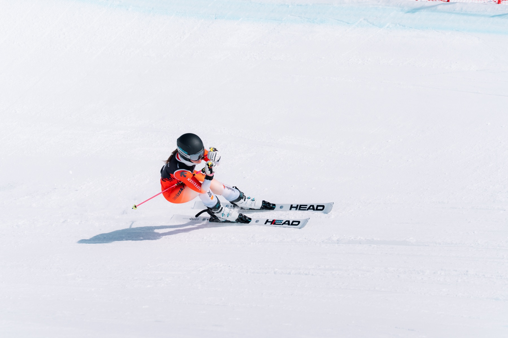
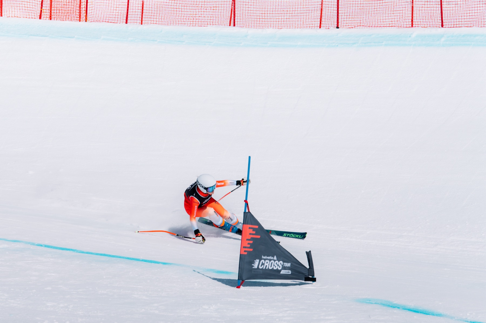

Hier fährt die Weltspitze von morgen.

Das Event
Die Zukunft des Cross-Sports? Sie rasten in St. Moritz um die Wette.
An den FIS Cross Junior World Championships 2026 trafen in St. Moritz die besten Nachwuchsathlet:innen der Welt im Ski- und Snowboardcross aufeinander. Vom 13. bis 21. März ging es auf der Corviglia um Medaillen, Weltmeistertitel und jede Menge Adrenalin. Mit dabei: internationale Top-Talente, enge Head-to-Head-Rennen und grosse Emotionen — inklusive starker Schweizer Erfolge.
Unser Auftrag
Die Aufgabe ging weit über das reine Festhalten der Rennen hinaus. Während der gesamten Eventwoche entwickelten und produzierten wir laufend Content für die Social-Media-Kanäle von Swiss-Ski. Tägliche Aftermovies und Recaps fassten die wichtigsten Highlights zusammen, während Reels und individueller Athleten-Content zusätzliche Geschichten rund um die Junioren-Weltmeisterschaften erzählten.
Dafür waren wir nicht nur während der Wettkämpfe im Einsatz, sondern begleiteten auch Trainings und Vorbereitungen — auf der Piste, im Gym und hinter den Kulissen. Das Ziel: Einen vielseitigen und authentischen Einblick in den Event zu schaffen und die Atmosphäre der Junioren-WM weit über St. Moritz hinaus erlebbar zu machen.

AlbumWas wir geliefert haben
Renn- & Actionfoto
Eventfotografie an acht Renntagen — Ski Cross und Snowboard Cross im Wettkampf, festgehalten in Bewegung und im entscheidenden Moment.
Aftermovies
Tägliche Recap-Reels direkt vom Renntag sowie ein zusammenfassendes Gesamt-Aftermovie über alle acht Tage der Championships.
Off-Snow-Content
Storys abseits der Strecke — von Athletenporträts bis zu kleinen Momenten am Rand des Wettkampfs, die den Event greifbar machen.
3 BTS-Reels
Drei Behind-the-Scenes-Reels, die zeigen, was zwischen den Rennläufen passiert — für Social Media aufbereitet und sofort einsatzbereit.